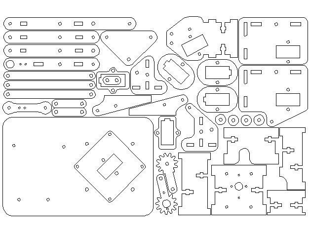
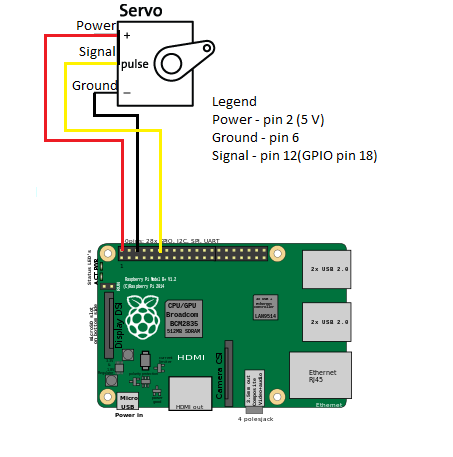

The F.I.M.P. project is a robotic arm controlled by 4 servo motors powered by a 5V power supply and operated by a raspberry pi 3. The purpose of the project is to have construction operations to be done in a safer environment(example would be to have crane machines operated from a safer distance than have it be directly controlled by humans). The goal is to move all motors with a sensor (such as light sensor) and have the arm move with a mobile app as well.
My oringinal Budget was to purchase a Raspberry Pi 3 along with the Mearm kit but over the course of the 14 weeks I purchased 2 servo motors for testing the movement of the servo motor and a 5V power supply module for powering the 4 servo motors due to the raspberry pi not having enough power to move all 4 motors. This is my overall budget:
| Item | Quantity | Cost |
|---|---|---|
| Raspberry Pi 3 Complete Starter Kit | 1 | $112.99 |
| MeArm - Robotic Arm Kit | 1 | $79.99 |
| Micro Servo Motor (for testing) | 2 | $9.99 |
| 3.3V 5V Power Supply Module | 1 | $5.97 |
| Total: | $208.94 |
Following the gannett chart created in week 3, I have bought, assembled and created the code for the project. This table will go over the time I have spent when working on this project:
| Task | Time Spent |
|---|---|
| Purchased The Raspberry Pi 3 and Me Arm kit | 5 days(Shipping) |
| Assembly of the MeArm and Raspberry Pi setup | 2 Hours |
| Solder PCB | 2 Hours |
| Testing and Powering PCB | 3 Hours |
| Write and run test code to move motor with key input | 2 Hours |
| Open House | 4 Hours |
| Write and run test code to move with PCB sensor | 4 Hours |
Step 1: Purchase or print the parts for the arm

Step 2: Assembly the MeArm robotic arm with the following instruction sheet:
Step 3: Setup and power the Raspberry Pi for running the test code.
Step 4: Setup the Mearm and Raspberry Pi like this:

Step 5: Run test code to begin controlling motor
The PCB is used to move the robotic arm with the light sensor when specific light readings are taken. When a light mesurement is in a regular room light measurement, the robotic arm will stay centered. When the room is dark, the arm will move to the left and when the room is too bright, the arm moves to the right.
Here is a video of the robotic arm being controlled by a light sensor:
This is code that I used to control the servo motors with user inputs:
#include
#include
#include
using namespace std;
#define PWM_SERVO 18 // this is PWM0, pin 12
#define BUTTON_GPIO 27 // this is GPIO27, pin 13
#define LEFT 29 // manually calibrated values
#define RIGHT 118 // for the left, right and
#define CENTER 73 // center servo positions
bool sweeping = true; // sweep servo until button pressed
void buttonPress(void) { // ISR on button press - not debounced
cout << "Button was pressed -- finishing sweep." << endl;
sweeping = false; // the while() loop should end soon
}
int main() { // must be run as root
wiringPiSetupGpio(); // use the GPIO numbering
pinMode(PWM_SERVO, PWM_OUTPUT); // the PWM servo
pinMode(BUTTON_GPIO, INPUT); // the button input
wiringPiISR(BUTTON_GPIO, INT_EDGE_RISING, &buttonPress);
pwmSetMode(PWM_MODE_MS); // use a fixed frequency
pwmSetRange(1000); // 1000 steps
pwmSetClock(384); // gives 50Hz precisely
cout << "Sweeping the servo until the button is pressed" << endl;
while(sweeping) {
for(int i=LEFT; i=LEFT; i--) { // Fade fully off
pwmWrite(PWM_SERVO, i);
usleep(10000);
}
}
pwmWrite(PWM_SERVO, CENTER);
cout << "Program has finished gracefully - servo centred" << endl;
return 0;
}